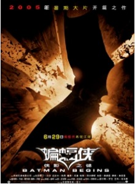

- 影片名称：蝙蝠侠.侠影之谜
- 上映时间：2005年6月15日（俄罗斯）
- 类别：剧情，犯罪，冒险
- 语言：英语
- 主演：克里斯蒂安·贝尔，迈克尔·凯恩，摩根·弗里曼，加里·奥德曼
- 导演：克里斯托弗·诺兰
- 影片简介：
-
一个人该如何改变世界？
这是年幼的布鲁斯·韦恩在亲眼目睹父母在高谭市街头被歹徒开枪打死后一直萦绕在脑海的问题，这起不幸的 悲剧也改变了他的一生。他想要继承他的父母为社会无私的奉献精神，同时又他受到罪恶感及满腔怒火的痛苦 煎熬，一心想要为父母报仇。这位年轻的亿万富翁对社会正义感到彻底失望，于是决定离开高谭市，隐姓埋 名、环游世界，寻找打击犯罪最犀利的方法，让世上穷凶极恶的坏蛋闻之丧胆。他在世界各地到处游荡，为 了了解罪犯的心理，布鲁斯也亲自犯罪，因此被逮捕入狱。他在狱中遇到一个名为杜卡的神秘人物，杜卡成 为布鲁斯的师父，传授他一身高强的武艺以及坚强的意志力，让他拥有打击犯罪消灭邪恶力量的能力。
布鲁斯重返高谭市后，发现这座曾经兴盛的大都市已被横行霸道的罪犯以及贪污腐败的官僚控制，而他 原本充满为社会奉献及服务的精神的家族事业韦恩企业（Wayne Enterprises），却被现任的执行长厄尔掌控 ，成为一个唯利是图的大财团。布鲁斯的儿时好友瑞秋·道斯成为了高谭市地检署的助理检察官，由于黑帮 老大卡曼费康尼收买了高谭市的高官政要，她一直无法起诉最凶狠的罪犯。而该市的精神科医师克莱恩医师 也为 黑帮老大费康尼的打手以精神异为由脱罪。
正面评价
- 《时光网》：诺兰完全忠实弗兰克·米勒于1986年创作的《黑暗骑士归来》那种粗粝大胆、黑暗写实的风格，同时用IMAX的胶片拍摄模式来勾勒他所期望的歌剧式气魄。影片将超级英雄电影提高至空前的高度，浓郁的暗黑写实风格也影响到了后来的许多超级英雄电影。
- 《信息时报》：导演颇有想象力地填补与诠释了亿万家产的继承人布鲁斯·韦恩如何成为黑暗拯救者蝙蝠侠的侠道之路。而且，本片也一改上一集过分夸张、弱智的漫画化风格，采用了较为严谨的现实主义手法，诸如对蝙蝠侠初出江湖、新手上路时的技巧不娴熟以及最初战车、战衣的老土、原始、野性等等细节都让人觉得真实可信。此外，该爆炸的就爆炸、该飚车的就飚车，这些都有着较强的娱乐可观性。
负面评价
- 《东方网》：美式英雄影片显露疲态。虽然超人、蝙蝠侠、蜘蛛侠等改编自“美国英雄”漫画系列的电影，先 天拥有无数本土拥护者，能轻松成为票房印钞机，但是这些好莱坞的“终身最爱”也在悄然改变。
- 《信息时报》：影片前半段叙述布鲁斯内心转变的戏实在太长太闷了，现实与回忆交错进行，又是倒叙又是插 叙，跳来剪去的，像《记忆碎片》那样让人看得眼花缭乱。而且，影片所叙述的只不过是几乎所有美国漫画大 侠都经历过的，即如何克服小时候的内心伤痛（弗洛伊德式的梦魇与恐惧），并将破坏性的情绪化作积极的力 量。影片可以说是详实严肃有余，但娱乐观赏性寥寥。